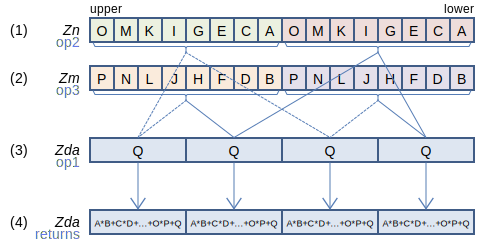
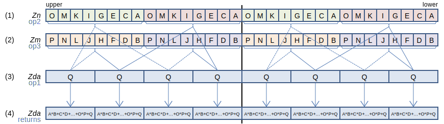
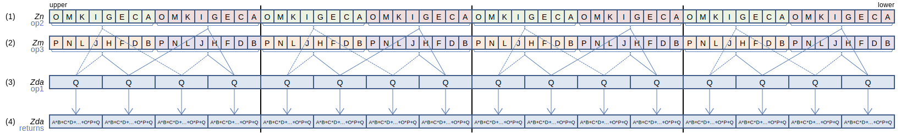
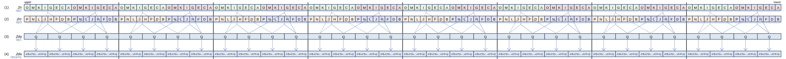
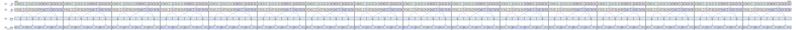

SVE Instruction List by Dougall Johnson
UMMLA: Unsigned integer matrix multiply-accumulate
UMMLA Zda.S, Zn.B, Zm.B (SVE+I8MM+NS
svuint32_t svmmla[_u32](svuint32_t op1, svuint8_t op2, svuint8_t op3)
128-bit SVE
Within each 128-bit segment, interpreting the unsigned 8-bit integers from (1) and (2) as 2-by-8 and 8-by-2 matrices respectively, and the 32-bit integers from (3) as a 2-by-2 matrix, multiply (1) by (2), add the resulting 2-by-2 matrix to (3), and write the result to (4).
256-bit SVE
Within each 128-bit segment, interpreting the unsigned 8-bit integers from (1) and (2) as 2-by-8 and 8-by-2 matrices respectively, and the 32-bit integers from (3) as a 2-by-2 matrix, multiply (1) by (2), add the resulting 2-by-2 matrix to (3), and write the result to (4).
512-bit SVE
Within each 128-bit segment, interpreting the unsigned 8-bit integers from (1) and (2) as 2-by-8 and 8-by-2 matrices respectively, and the 32-bit integers from (3) as a 2-by-2 matrix, multiply (1) by (2), add the resulting 2-by-2 matrix to (3), and write the result to (4).
Larger sizes
1024-bit SVE
Within each 128-bit segment, interpreting the unsigned 8-bit integers from (1) and (2) as 2-by-8 and 8-by-2 matrices respectively, and the 32-bit integers from (3) as a 2-by-2 matrix, multiply (1) by (2), add the resulting 2-by-2 matrix to (3), and write the result to (4).
2048-bit SVE
Within each 128-bit segment, interpreting the unsigned 8-bit integers from (1) and (2) as 2-by-8 and 8-by-2 matrices respectively, and the 32-bit integers from (3) as a 2-by-2 matrix, multiply (1) by (2), add the resulting 2-by-2 matrix to (3), and write the result to (4).
Report mistakes or give feedback
Inspired by and based on the x86/x64 SIMD Instruction List by Daytime.